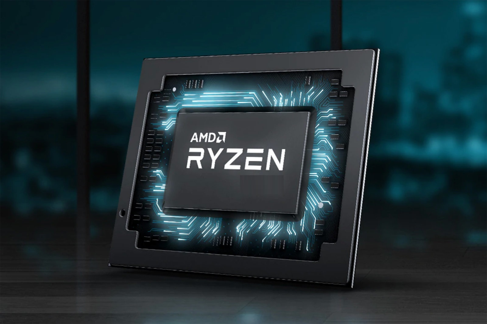
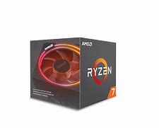

Top 5 Budget Processors For Gaming and Productivity

Hi,
I am Shivansh Jain and i'm writing an article for you all about top 5 processors for gaming and productivity under your budget. There are too many processors out there to choose from but only some of them worth that. I will suggest to wait till September 2020 because Ryzen 4000 series is coming out. They will feature you more cores and superior performance out of them. Intel make processor to only provide you with higher base clock and turbo clock speeds and also they are optimise for gaming. I would buy AMD processors because AMD gives you more cores and performance in less price. And if you dont have money to buy a large space SSD you can use Amd's Sense MI technology. It also support PCIe 4.0 which is blazing fast. But if you are eager to have a pc right now then let's see the best budget processors for you.
1. Ryzen 5 3600XT
Ryzen 5 3600XT is definately the best overall processor for productivity and gaming both.The XT series is a refresh to Ryzen's X series. This processor is a beast with only 6 cores and support for Simuntaneous Multi-Threading. It has a base clock of 3.8 GHz and turbo upto 4.8 GHz with a tdp of 95W. This processor beats core i5 10600k in productivity intensive programs like blender, photoshop, premier pro after effects, and also in Multi-threaded performance. Not only that, it beatsi5 9600k in gaming. This is the best processor I would suggest if you want to do both gaming and cpu intensive tasks. This is unlocked too so you can overclock it.
2. Core i5-10600K
Intel's core i5-10600K is the best if you only need to do high performance gaming. This is also a 6 core processor with 12 threads. This Processor comes with a base clock of 4.1 GHz and turbo upto 4.8 GHz with a very high tdp of 125W. You get super high framerates in AAA titles if you pair it with a RX 5600 XT or RTX 2060 like Witcher 3, Red Dead Redmption 2, Hitman, Shadow OF the Tomb Raider, Halo, Zelda, Call of Duty, and Grand Theft Auto 5, PUBG etc. It also has integrated Intel UHD 630 Graphics with base frequency of 0.35 GHz. This is too a unlocked processor so you can overclock it upto super high clocks under sufficient cooling.
3. Ryzen 7 2700X

AMD Ryzen 7 2700X is my choice if you want a heavy workstation. This processor come with 8 cores and 16 threads so that it can do Simuntaneous Multi-Threading. It has a base clock speed of 3.7 GHz and turbo clock speed of 4.3 GHz. This is a fully unlocked processor and allows you to overclock it. This processor come packaged with a Wraith Prism cooler which provides it a very efficient cooling under loads so you don't need to spent money on an aftermarket cpu cooler. This processor provide you almost more than the performance of Core i5-10600K in Multi-threading. You can do gaming with this too but the cores are not optimized for gaming still it can give you the similar performance to Core i5 8600K.
4. Core i5-9600K
Core i5-9600K is almost same in single core performance as i5-10600K but it does not support multi-threading and is priced at about 15,500 INR. This processor comes with 6 cores and 6 threads with a base clock of 3.7 GHz and a turbo clock of 4.6 GHz. This processor is also unlocked. This can provise almost same performance in gaming as a Ryzen 5 3600X but will remain backed in multi-threaded applications. This is a good choice if you want to save money on a processor and invest on a good graphics card this will not even bottlneck an RTX 2070. And is still a good choice for you on a low budget.
5. Ryzen 5 3500X
AMD Ryzen 5 3500X is the best processor for those who are on a super low budget this processor comes out to beat Core i5-9400F and a very good choice because it is comparable to Ryzen 5 3600 in gaming but is very backed in multi-threaded applications. It has 6 cores and 6 threads with a base clock of 3.6 GHz and a boost clock of 4.1 GHz. This processor is also unlocked. This processor has a price of 12,000 INR but you can only buy it from some sites as this processor is location specefic to China. But you can buy its non X varient which isn't location specific and costs approx 11,000 INR. This will not bottelneck an RX 5700 or RTX 2070. This is the best choice near 150$.